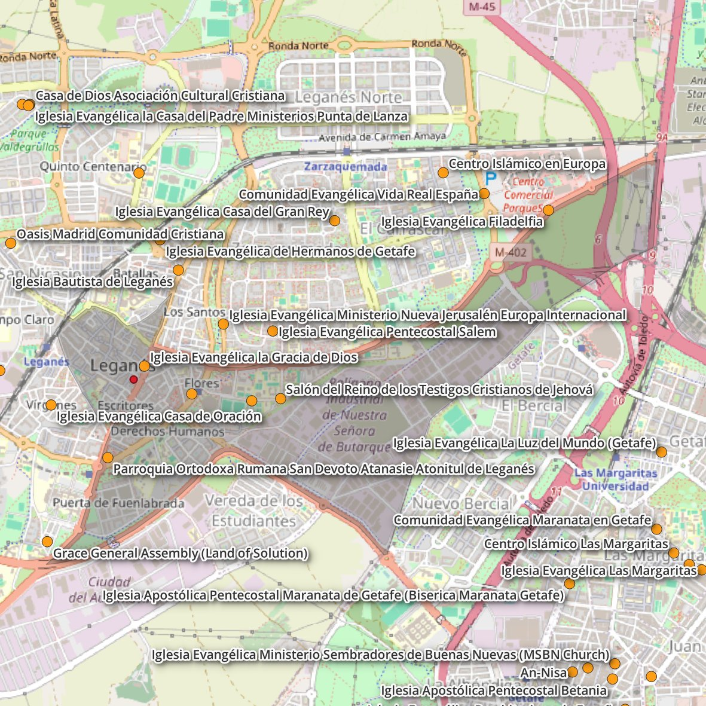
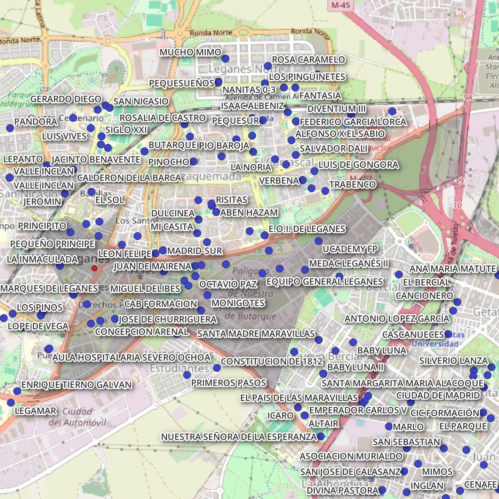

Puntos de interés en el territorio parroquial
Parroquia San Salvador (Leganés) · Arciprestazgo de Leganés
Entidades religiosas no católicas

5 entidades religiosas no católicas en el territorio de la parroquia.
Evangélicos (2)
- Iglesia Evangélica FiladelfiaAvenida Gibraltar 7, Leganés
- Iglesia Evangélica la Gracia de DiosCalle Jeromin 23 Bajo, Leganés
Iglesia de Jesucristo de los Santos de los Últimos Días (1)
- La Iglesia de Jesucristo de los Santos de los Últimos DíasCalle del Maestro 23, Leganés
Ortodoxos (1)
- Parroquia Ortodoxa Rumana San Devoto Atanasie Atonitul de LeganésCalle de Saavedra Fajardo 3 1º C, Leganés
Testigos de Jehová (1)
- Salón del Reino de los Testigos Cristianos de JehováCalle Beatriz Galindo 2, Leganés
Fuente: Registro de Entidades Religiosas del Ministerio de la Presidencia, Justicia y Relaciones con las Cortes. Situación en el mapa: dirección geocodificada con CartoCiudad (IGN) o Nominatim (OpenStreetMap).
Centros educativos

18 centros educativos en el territorio de la parroquia (público: 12, privado concertado: 3, privado: 3).
| Centro | Tipo | Titularidad | Domicilio | Web |
|---|---|---|---|---|
| CARMEN CONDE | Colegio de educación infantil, primaria y secundaria | Público | Calle Pedro Patiño, 3, 28914 Leganés | Página web |
| CIUDADESCUELA MUCHACHOS | Centro privado de educación infantil, primaria y secundaria | Privado concertado | Avenida Doctor Fleming, 3, 28912 Leganés | |
| CONCEPCION ARENAL | Colegio de educación infantil y primaria | Público | Avenida Doctor Fleming, 5, 28912 Leganés | Página web |
| DIRECCION AREA TERRITORIAL MADRID-SUR | Establecimiento administrativo | Público | Calle Maestro, 19, 28914 Leganés | |
| EL CUCO | Escuela infantil | Público | Calle Maestro, 10, 28914 Leganés | Página web |
| EQUIPO GENERAL LEGANES | Equipo de orientación educativa y psicopedagógica. General. | Público | Calle Maestro, 14, 28914 Leganés | Página web |
| GABRIEL GARCIA MARQUEZ | Instituto de educación secundaria | Público | Calle Beatriz Galindo, 6, 28914 Leganés | Página web |
| JOSE DE CHURRIGUERA | Instituto de educación secundaria | Público | Calle Constitución de Cádiz, 1, 28914 Leganés | Página web |
| LA INMACULADA | Centro privado de educación infantil, primaria y secundaria | Privado concertado | Avenida Vicente Aleixandre, 1, 28911 Leganés | Página web |
| LICEO SAN PABLO | Centro privado de educación infantil, primaria y secundaria | Privado concertado | Calle Alhelí, 1, 28912 Leganés | Página web |
| LOPE DE VEGA | Escuela infantil | Público | Calle Lope de Vega, 8, 28912 Leganés | Página web |
| MARQUES DE LEGANES | Colegio de educación infantil y primaria | Público | Calle Pizarro, 4, 28911 Leganés | Página web |
| MEDAC LEGANÉS II | Centro privado de formación profesional específica | Privado | Calle Ramón y Cajal, 4, 28914 Leganés | |
| MIGUEL DELIBES | Colegio de educación infantil y primaria | Público | Calle Maestro, 9, 28914 Leganés | Página web |
| PABLO NERUDA | Instituto de educación secundaria | Público | Calle Maestro, 31, 28914 Leganés | Página web |
| PEDRO DUQUE | Instituto de educación secundaria | Público | Calle Beatriz Galindo, 1-3, 28914 Leganés | Página web |
| PRINCIPITO | Escuela infantil privada | Privado | Calle Nuncio, 13, 28911 Leganés | Página web |
| UCADEMY FP | Centro privado de formación profesional específica | Privado | Calle Rey Pastor, 30, 28914 Leganés | Página web |
Fuente: registro de centros educativos de la Comunidad de Madrid. Solo se recogen los centros de alta.